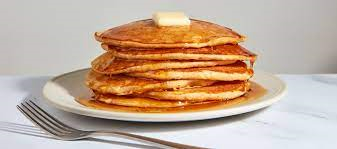

Pancakes Recipe

Bisquicks mix is excellent for making homemade style pancakes you'd find at restaurants's like IHOP.
Ingredients:
- 2 cups of Bisquick Mix
- 1 Cup of Milk
- 2 Eggs
Steps:
- Stir incredients until blended.
- Pour slightly less than 1/4 cupfuls onto hot greased gridle.
- Cook until edges are dry, Turn; cook until golden.